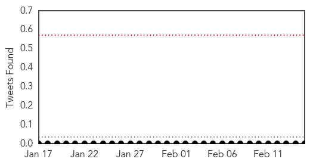

Chikungunya
30-Day Web Trend
30-Day Twitter Trend
0 alerts, 0 warnings

Article Locations


Article Confidences

Top Articles:
-
No articles found for Feb 15, 2015
Top Tweets:
-
No tweets found for Feb 15, 2015
Unknown
30-Day Web Trend
0 alerts, 0 warnings

30-Day Twitter Trend
0 alerts, 0 warnings

Article Locations

Article Confidences

Top Articles:
- 0.917
- Chicago Tribune
- 0.917
- Chicago Tribune
- 0.917
- Chicago Tribune
- 0.917
- Chicago Tribune
- 0.914
- Cong lambasts Odisha govt for jaundice outbreak in Cuttack
- 0.910
- The world windows to Thailand
- 0.876
- AES nature varies in Gaya, Muzaffarpur
- 0.866
- Islamic State releases video purporting to show killing of 21 Egyptians in Libya
- 0.866
- Ukraine military says rebels are observing ceasefire "in general"
- 0.742
- Time to overhaul health sector
- 0.693
- Synthetic Vaccine Sought To Finally Eradicate Polio
- 0.679
- Naguru hospital in tight squeeze
- 0.657
- Vietnamese healing arts can help cure serious disease
- 0.653
- Children more vulnerable to rheumatic heart disease
- 0.646
- Hundreds of patients stranded in region's hospitals due to delays sending them home
- 0.620
- Two women die from bird flu, bringing 2015 death toll to eight
- 0.597
- Is there a way to outsmart germs?
- 0.578
- Contrary To Parents' Concerns, HPV Vaccine Linked To Less Risky Sexual Behavior
- 0.576
- Farsnews
- 0.518
- Public health ministry concerned over smog in 9 northern provinces
- 0.505
- Trebling of hospital waiting lists underscores folly of Minister Varadkar’s approach
Top Tweets:
-
No tweets found for Feb 15, 2015